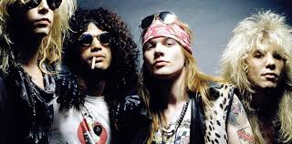
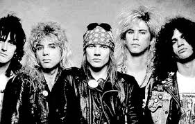
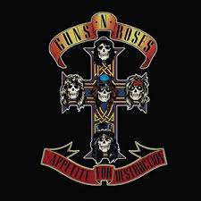
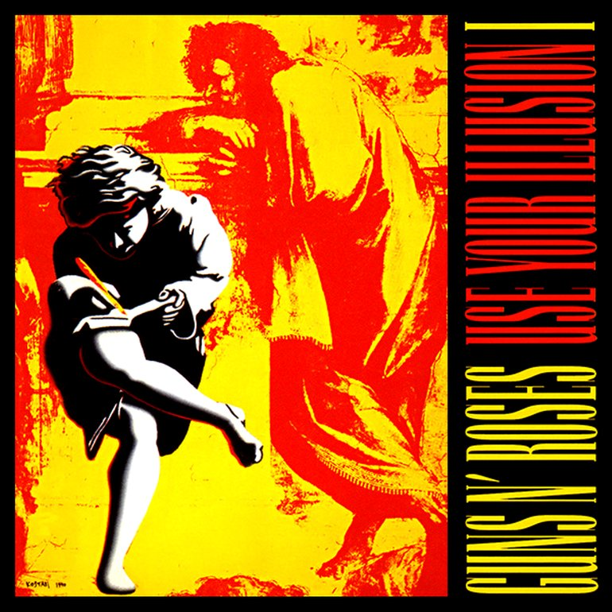
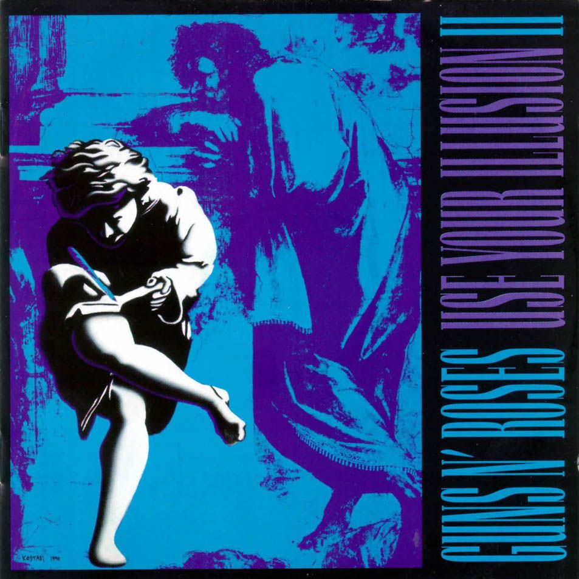

Guns N' Roses es una banda estadounidense de hard rock formada en Hollywood en la zona de Sunset Strip alrededor de Santa Monica, en la ciudad de Los Ángeles, California en 1985. El grupo fue fundado por el vocalista Axl Rose y el guitarrista Izzy Stradlin. Asimismo, la banda es uno de los números artísticos más exitosos de la historia musical, debido a sus grandes ventas, numerosos galardones, legado y repercusión mundial hasta la fecha. También Guns N' Roses es considerada una de las bandas más influyentes de la historia debido a su gran legado musical. De igual forma en el año 2011 fueron posicionados en el puesto número "21" en la lista de "los 100 mejores artistas de la historia", elaborada por la revista Rolling Stone en conjunto con diversos productores y críticos musicales. La banda ha vendido más de 150 millones de álbumes en todo el mundo,1314 incluyendo más de 60 millones de álbumes sólo en los Estados Unidos, lo que los posiciona en el puesto n° 28 en la lista de los artistas con más ventas y éxito de todos los tiempos. Su álbum debut Appetite for Destruction de 1987 ha vendido 3516 millones de copias a nivel mundial y alcanzó el número 1 en el Billboard 200 en Estados Unidos. Además, cuatro canciones del álbum ingresaron en el Top 10 en la Billboard Hot 100, y «Sweet Child o' Mine» quedó en el número uno. Además, es el álbum debut más exitoso y vendido en la historia y esta calificado como el cuarto mejor álbum debut de la historia, según la revista Rolling Stone. Su álbum de 1988 G N' R Lies ha vendido más de 16 millones de copias en todo el mundo y su canción «Patience» entró en el Top 5 del Billboard Hot 100 y el álbum alcanzó el número dos en el Billboard 200. Los álbumes gemelos Use Your Illusion I y Use Your Illusion II, de 1991, subieron al número 2 y 1 del Billboard 200, respectivamente, manteniéndose durante 108 semanas, teniendo una cifra combinada de ventas de más de 55 millones de copias a nivel mundial18 y 25 millones de copias vendidas solo en Estados Unidos, seis de los sencillos de ambos álbumes llegaron al Billboard Hot 100 y cuatro de ellos entraron al Top 10 de la misma lista. Su siguiente trabajo sería el álbum de versiones de canciones punk y glam del año 1993 titulado The Spaghetti Incident?, del cual se desprendieron tres sencillos, de los cuales uno entró en el Billboard Hot 100 y dos entraron en la recopilación de grandes éxitos; el álbum alcanzó el puesto número 4 del Billboard 200 y el número dos en el UK Album Chart. Durante el periodo en el que la banda volvía a los escenarios con nuevos músicos salieron dos discos, uno en directo titulado Live Era: '87-'93 en 1999 y otro recopilatorio llamado Greatest Hits en 2004; que, aunque la banda se mostró negativa a la salida del álbum, tuvo un gran éxito comercial (ha vendido casi 8 millones de copias solo en los Estados Unidos y 15 millones de copias en todo el mundo); llegó al número uno del UK Album Chart y tres en el Billboard 200, estuvo 138 semanas en el Billboard 200. Después de una década de trabajo y problemas con ex miembros en los tribunales, la banda publicó su siguiente álbum, Chinese Democracy, en 2008; han publicado tres sencillos, y uno de ellos entró en el Billboard Hot 100 y dos en el Mainstream Rock Tracks, y el álbum alcanzó el número tres en el Billboard 200 y el número dos en el UK Album Chart.
| Fecha de lanzamiento | Álbum |
|---|---|
| 16 de diciembre de 1986 | Like a suicide |
| 21 de julio de 1987 | Apettite for destruction |
| 29 de noviembre de 1988 | G N R Lies |
| 17 de septiembre de 1991 | Use your illusion I |
| 17 de septiembre de 1991 | Use your illusion II |
| 23 de noviembre de 1993 | The Spaghetti incident |
| 23 de noviembre de 1999 | Live Era |
| 23 de marzo de 2004 | Greateast Hits |
| 23 de noviembre de 2008 | Chinesy Democracy |
| 29 de junio de 2018 | Apetitte for destruction |
| Disco | Posición | Canción | Reproducciones |
|---|---|---|---|
|  | 1 | Sweet Child O' Mine | 690,189,398 |
|  | 2 | November Rain | 351,548,363 |
| 3 | Welcome to the Jungle | 446,749,082 | |
| 4 | Paradise City | 416,136,816 | |
|  | 5 | Knockin' On Heaven's Door | 261,321,682 |